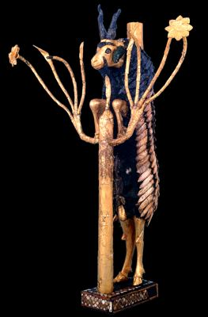

The Challenge -
Ram statue

This statue was one of a pair found by Leonard Woolley in a Royal Grave at Ur. It had been squashed flat by the weight of soil on top and had to be restored. It is made of shell, lapis lazuli and red stone which had been originally fixed to wood. It may have been used to support a small bowl.
To learn more about the objects found in the Royal Graves visit Tombs Explore.
|
|